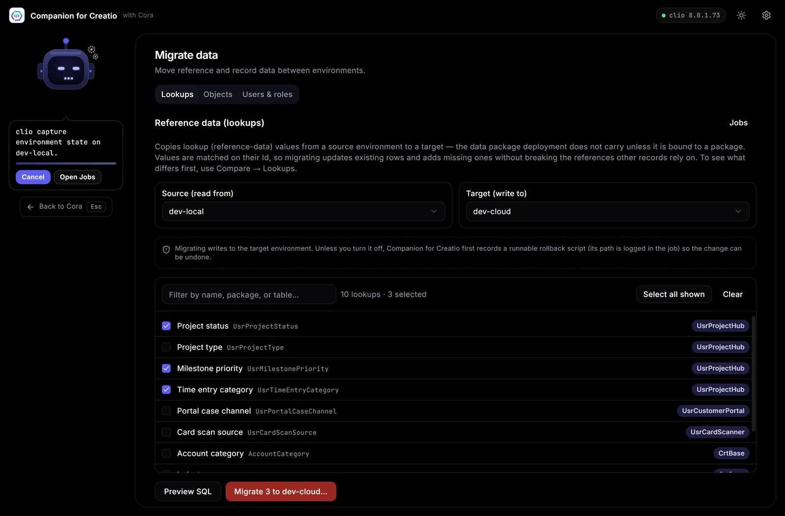

How to migrate lookups and records between Creatio environments
Package deployment moves configuration, not data. For reference data that belongs with your app, bind it to the package (in clio: create-data-binding and add-data-binding-row) so it travels with every deploy. For one-off copies of lookups, records or users, copy rows keyed on their Id so references keep working, and write a rollback script first.
You deploy a package to test and the new section opens, but its dropdowns are empty. That is expected: Creatio packages carry configuration, such as objects, pages, processes and code, while the data in lookups and sections stays where it was created. This guide covers the three ways to move it and when to use each.
The rule that matters: keep the Id
Creatio records point at each other by Id, a GUID. An Order points at its Status by the Status record's Id, not by its name. If you recreate a lookup value on the target with a new Id, every record that points at the old one breaks. So whatever method you use, copy rows with their original Id, and update rows that already exist instead of inserting duplicates.
Method 1: bind the data to a package
For reference data your application needs everywhere, such as order statuses, delivery types or default settings, the clean answer is a package data binding. The rows are stored inside the package and installed with it, on every environment, every time. You can bind data from Creatio's configuration section, or from a clio workspace:
clio create-data-binding --package UsrOrders --schema UsrDeliveryTypeThis creates a binding folder under packages/UsrOrders/Data/ with descriptor.json, data.json and filter.json. Add or replace rows with add-data-binding-row; if you leave out the Id column, clio generates one:
clio add-data-binding-row --package UsrOrders --binding-name UsrDeliveryType --values '{"Name": "Express"}'Use the binding folder's name for --binding-name. Then install the workspace as usual, for example with clio push-workspace -e test.
Use bindings for data you own. Binding transactional data, such as real orders or contacts, to a package is a bad idea: it ships to every environment and overwrites what is there.
Method 2: SQL, carefully
clio execute-sql-script runs SQL against an environment's database and can save the result as CSV or Excel. It needs cliogate 2.0.0.41 or newer on the environment (clio install-gate -e dev).
clio execute-sql-script -f delivery-types.sql -e dev -v csv -d delivery-types.csvPut the query in delivery-types.sql, which avoids quoting trouble on the command line. Reading this way is safe and useful for checking what differs. Writing with SQL is where it gets risky: it bypasses Creatio's business logic, the syntax differs between PostgreSQL and MS SQL, there is no undo, and foreign keys have to be satisfied in the right order. If you do write, back up the target first and keep a script that reverses every change.
Method 3: a migration screen with rollback
Companion for Creatio has a Migration screen built for one-off copies between environments:
- Lookups: tick the lookups to copy from a source to a target. Rows are matched on their Id, so existing rows are updated and missing ones added. Preview SQL shows the exact upsert before Migrate runs it. Compare → Lookups shows which values differ first.
- Objects: search any object, such as Lead, Contact or your own, to see its row counts on both sides, its columns and its foreign-key hierarchy, then copy its rows keyed on Id. Remap ownership to the target's Supervisor rewrites owner and created-by columns so they don't point at users who don't exist on the target.
- Users & roles: search and select users or roles on the source, preview the upsert with passwords redacted, and migrate.
Before anything is written, a runnable rollback script is recorded so the change can be undone.

A checklist that avoids most problems
- Deploy the packages first, so the target has the objects and columns the data needs.
- Back up the target, or make sure a rollback script exists.
- Migrate lookups before the records that point at them, and parent records before children.
- Check owners: records owned by users who only exist on the source need remapping.
- Verify on the target: counts match, dropdowns are filled, and a few records open without errors.
Companion for Creatio is a free desktop app for Windows and macOS that runs these clio steps for you, as jobs you can watch and cancel.